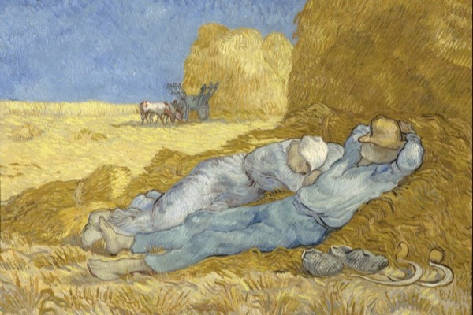

-

Big Enough
How to build muscle the natural way, and the harder skill of knowing when to stop. One supplement that works, real food, enough sleep, and a last ten percent that costs twice the effort for a result almost nobody will notice.
-

Still Moving
The two thirds of fitness lifting leaves out: cardio and stretching. How fit your heart is predicts how long you live better than almost anything, most stretching is wasted motion, and a small dose buys nearly all of the benefit.
-

What You're Supposed to Eat
What to eat, sorted from the settled to the sold. Weight is just energy, health is mostly real food, and every famous diet ties when you actually test it. The few things that are true, and the long aisle of things that are not.
-

The Other Hours
Everything that decides your health but is not the gym or the kitchen: sleep, the people you love, what you breathe and drink, the medical numbers that save lives, and the recovery rituals that mostly do not work. Ranked biggest lever first.
-

How Long Can You Live?
The hard wall at 120 is unproven, the oldest-age records are riddled with missing paperwork and pension fraud, and the thing that actually adds years is the one nobody calls a hack. How long a human can last, and why.
-
The Body Rhymes
The normal-but-startling things the body does at the very start and end of life, set as mirror pairs, from a newborn running on its mother's hormones to the reflex you lose as a toddler and regain only if your brain fails. Why the two ends rhyme.